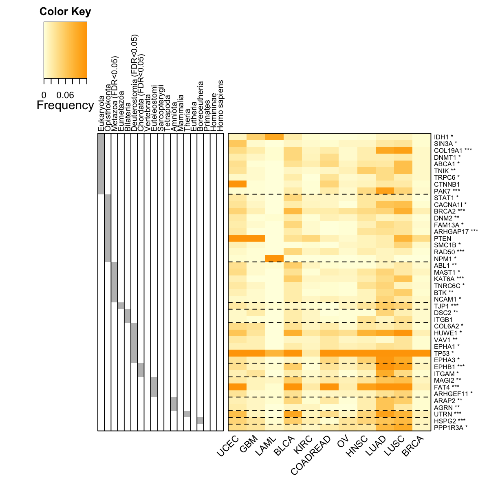

'TCGA_mutations' (from package 'dnet' version 1.0.7) has been loaded into the working environment
eset <- TCGA_mutations
# extract information about phenotype data
pd <- pData(eset)
pd[1:3,]
time status Age Gender TCGA_tumor_type Tumor_stage
TCGA-B8-4153-01B-11D-1669-08 404 0 74 male KIRC 3
TCGA-24-1469-01A-01W-0553-09 277 0 71 female OV 3
TCGA-06-5411-01A-01D-1696-08 254 1 51 male GBM NA
Tumor_grade
TCGA-B8-4153-01B-11D-1669-08 3
TCGA-24-1469-01A-01W-0553-09 3
TCGA-06-5411-01A-01D-1696-08 NA
# extract information about feature/gene data
fd <- fData(eset)
fd[1:3,]
EntrezID Symbol
1060P11.3 100506173 1060P11.3
A1BG 1 A1BG
A1CF 29974 A1CF
Desc
1060P11.3 killer cell immunoglobulin-like receptor, three domains, pseudogene
A1BG alpha-1-B glycoprotein
A1CF APOBEC1 complementation factor
Synonyms
1060P11.3 -
A1BG A1B|ABG|GAB|HYST2477
A1CF ACF|ACF64|ACF65|APOBEC1CF|ASP
# extract information about mutational data
md <- exprs(eset)
md[1:3,1:3]
TCGA-B8-4153-01B-11D-1669-08 TCGA-24-1469-01A-01W-0553-09
1060P11.3 1 1
A1BG 0 0
A1CF 0 0
TCGA-06-5411-01A-01D-1696-08
1060P11.3 0
A1BG 1
A1CF 0
# number of samples for each cancer type
tumor_type <- sort(unique(pData(eset)$TCGA_tumor_type))
table(pData(eset)$TCGA_tumor_type)
BLCA BRCA COADREAD GBM HNSC KIRC LAML LUAD
92 763 193 275 300 417 185 155
LUSC OV UCEC
171 315 230
'org.Hs.string' (from http://supfam.org/dnet/RData/1.0.7/org.Hs.string.RData) has been loaded into the working environment
# restrict to those edges with high confidence (score>=700)
network <- subgraph.edges(org.Hs.string, eids=E(org.Hs.string)[combined_score>=700])
network
IGRAPH UN-- 15341 316170 --
+ attr: name (v/c), seqid (v/c), geneid (v/n), symbol (v/c),
| description (v/c), neighborhood_score (e/n), fusion_score (e/n),
| cooccurence_score (e/n), coexpression_score (e/n), experimental_score
| (e/n), database_score (e/n), textmining_score (e/n), combined_score
| (e/n)
+ edges (vertex names):
[1] 3017550--3023854 3023931--3028317 3019304--3028317 3028317--3033319
[5] 3023602--3028317 3014709--3028317 3024678--3026825 3023468--3030905
[9] 3026117--3030905 3026845--3029085 3017265--3027473 3015527--3033837
[13] 3019960--3033973 3021862--3033174 3015979--3025568 3015355--3025568
+ ... omitted several edges
IGRAPH UN-- 1889 14160 --
+ attr: name (v/c), seqid (v/c), geneid (v/n), symbol (v/c),
| description (v/c), neighborhood_score (e/n), fusion_score (e/n),
| cooccurence_score (e/n), coexpression_score (e/n), experimental_score
| (e/n), database_score (e/n), textmining_score (e/n), combined_score
| (e/n)
+ edges (vertex names):
[1] OR2G2--OR2L8 OR2G2--OR14A16 OR2G2--OR10G8 OR2G2--OR11L1 OR2G2--OR2L3
[6] OR2G2--OR5D18 OR2G2--OR10G7 OR2G2--OR2T12 OR2G2--OR5F1 OR2G2--OR2T33
[11] OR2G2--OR2C3 OR2G2--OR6F1 OR2G2--OR5P2 OR2G2--OR8J3 OR2G2--OR4C15
[16] OR2G2--OR2M2 OR2G2--OR5D13 OR2G2--OR4Q3 OR2G2--OR2B11 OR2G2--OR2M5
+ ... omitted several edges
Start at 2015-07-16 16:31:03
First, consider the input fdr (or p-value) distribution
Second, determine the significance threshold...
significance threshold: 2.50e-02
Third, calculate the scores according to the input fdr (or p-value) and the threshold (if any)...
Amongst 2836 scores, there are 149 positives.
Finally, find the subgraph from the input graph with 1889 nodes and 14160 edges...
Size of the subgraph: 44 nodes and 67 edges
Finish at 2015-07-16 16:31:15
Runtime in total is: 12 secs
net
IGRAPH UN-- 44 67 --
+ attr: name (v/c), seqid (v/c), geneid (v/n), symbol (v/c),
| description (v/c), score (v/n), neighborhood_score (e/n),
| fusion_score (e/n), cooccurence_score (e/n), coexpression_score
| (e/n), experimental_score (e/n), database_score (e/n),
| textmining_score (e/n), combined_score (e/n)
+ edges (vertex names):
[1] CTNNB1--FAT4 CTNNB1--MAGI2 CTNNB1--DNM2 CTNNB1--TP53 CTNNB1--TNIK
[6] CTNNB1--TJP1 CTNNB1--ABL1 CTNNB1--PTEN DSC2 --TP53 IDH1 --TP53
[11] ITGB1 --HSPG2 ITGB1 --COL6A2 ITGB1 --PAK7 ITGB1 --ITGAM ITGB1 --PTEN
[16] ITGB1 --AGRN ITGB1 --UTRN EPHA3 --EPHA1 EPHA3 --ABL1 FAM13A--VAV1
+ ... omitted several edges

legend_name <- paste("C",1:length(mcolors)," (n=",com$csize,", pval=",signif(com$significance,digits=2),")",sep='')
legend("topleft", legend=legend_name, fill=mcolors, bty="n", cex=0.6)

# fit a Cox proportional hazards model using the subnetwork
## for the whole network
data_g <- t(md[V(net)$name,])
data_g <- apply(data_g!=0, 1, sum)
data <- cbind(pd, net=data_g)
fit <- coxph(formula=Surv(time,status) ~ Age + Gender + TCGA_tumor_type + net, data=data)
res <- as.matrix(anova(fit))
HR_g <- res[5,2]
pvals_g <- res[5,4]
## for the cumulative nodes from the network
cg_names <- names(sort(HR[V(net)$name], decreasing=T))
cg_signif <- matrix(1, nrow=length(cg_names), ncol=2)
rownames(cg_signif) <- cg_names
colnames(cg_signif) <- c("HR", "pvalue")
for(i in 1:length(cg_names)){
data_g <- t(md[cg_names[1:i],])
if(i!=1){
data_g <- apply(data_g!=0, 1, sum)
}else{
data_g <- as.vector(data_g!=0)
}
data <- cbind(pd, cnet=data_g)
fit <- coxph(formula=Surv(time,status) ~ Age + Gender + TCGA_tumor_type + cnet, data=data)
res <- as.matrix(anova(fit))
cg_signif[i,] <- res[5,c(2,4)]
}
cg_signif[cg_signif[,2]==0,2] <- min(cg_signif[cg_signif[,2]!=0,2])
naive <- sample(HR, length(cg_names))
bp.HR.list <- list(All=naive, Neti=HR[cg_names], Netc=cg_signif[2:nrow(cg_signif),1])
par(las=2, mar=c(10,8,4,2)) # all axis labels horizontal
boxplot(bp.HR.list, outline=F, horizontal=F, names=c("naive\n(genes in random)", "dnet\n(genes individually)", "dnet \n(genes in combination)"), col=c("red","green","blue"), ylab="Cox hazard ratio (HR)", log="y", ylim=c(0.1,100))

# Two-sample Kolmogorov-Smirnov test
## Genes randomly choosen versus genes in the network (used individually)
stats::ks.test(x=naive, y=HR[cg_names], alternative="two.sided", exact=NULL)
Warning message:
cannot compute exact p-value with ties
Two-sample Kolmogorov-Smirnov test
data: naive and HR[cg_names]
D = 0.86364, p-value = 1.121e-14
alternative hypothesis: two-sided
## Genes in the network (used individually) versuse genes in the network (used in combination)
stats::ks.test(x=HR[cg_names], y=cg_signif[2:nrow(cg_signif),1], alternative="two.sided", exact=NULL)
Two-sample Kolmogorov-Smirnov test
data: HR[cg_names] and cg_signif[2:nrow(cg_signif), 1]
D = 1, p-value = 4.441e-16
alternative hypothesis: two-sided
Start at 2015-07-16 16:31:26
First, define topology of a map grid (2015-07-16 16:31:26)...
Second, initialise the codebook matrix (36 X 67) using 'linear' initialisation, given a topology and input data (2015-07-16 16:31:26)...
Third, get training at the rough stage (2015-07-16 16:31:26)...
1 out of 363 (2015-07-16 16:31:26)
37 out of 363 (2015-07-16 16:31:26)
74 out of 363 (2015-07-16 16:31:26)
111 out of 363 (2015-07-16 16:31:26)
148 out of 363 (2015-07-16 16:31:26)
185 out of 363 (2015-07-16 16:31:26)
222 out of 363 (2015-07-16 16:31:26)
259 out of 363 (2015-07-16 16:31:26)
296 out of 363 (2015-07-16 16:31:26)
333 out of 363 (2015-07-16 16:31:26)
363 out of 363 (2015-07-16 16:31:26)
Fourth, get training at the finetune stage (2015-07-16 16:31:26)...
1 out of 1441 (2015-07-16 16:31:26)
145 out of 1441 (2015-07-16 16:31:26)
290 out of 1441 (2015-07-16 16:31:26)
435 out of 1441 (2015-07-16 16:31:27)
580 out of 1441 (2015-07-16 16:31:27)
725 out of 1441 (2015-07-16 16:31:27)
870 out of 1441 (2015-07-16 16:31:27)
1015 out of 1441 (2015-07-16 16:31:27)
1160 out of 1441 (2015-07-16 16:31:27)
1305 out of 1441 (2015-07-16 16:31:27)
1441 out of 1441 (2015-07-16 16:31:27)
Next, identify the best-matching hexagon/rectangle for the input data (2015-07-16 16:31:27)...
Finally, append the response data (hits and mqe) into the sMap object (2015-07-16 16:31:27)...
Below are the summaries of the training results:
dimension of input data: 11x67
xy-dimension of map grid: xdim=6, ydim=6
grid lattice: rect
grid shape: sheet
dimension of grid coord: 36x2
initialisation method: linear
dimension of codebook matrix: 36x67
mean quantization error: 0.00343617643351582
Below are the details of trainology:
training algorithm: sequential
alpha type: invert
training neighborhood kernel: gaussian
trainlength (x input data length): 33 at rough stage; 131 at finetune stage
radius (at rough stage): from 1 to 1
radius (at finetune stage): from 1 to 1
End at 2015-07-16 16:31:27
Runtime in total is: 1 secs
write.table(sif, file=paste("Survival_TCGA.sif", sep=""), quote=F, row.names=F,col.names=F,sep="\t")
## Output the corresponding mutation frequency data
hmap <- data.frame(Symbol=rownames(data), data)
write.table(hmap, file=paste("Survival_TCGA.txt", sep=""), quote=F, row.names=F,col.names=T,sep="\t")
# define the "mutation ubiquity" of genes in terms of a vector which stores the fraction of samples (within a tumor type) having the mutated gene
# sparseness for a vector is: 1) one if the vector contains only a single non-zero value; 2) zero if and only if all elements are equal; 3) otherwise, the value interpolates smoothly between the two extremes
sparseness <- sapply(1:nrow(frac_mutated), function(i){
v <- frac_mutated[i,]
n <- length(v)
norm1 <- sum(abs(v))
norm2 <- sqrt(sum(v^2))
(sqrt(n)-norm1/norm2) / (sqrt(n)-1)
})
sparseness <- matrix(sparseness, ncol=1)
rownames(sparseness) <- rownames(frac_mutated)
# derive the "mutation ubiquity" of genes: mutational fraction with the same type, and fraction consistent across different types
ubiquity <- 1- sparseness
dev.new()
hist(ubiquity,20, xlab="Cross-tumor mutation ubiquity", xlim=c(0,1))
Start at 2015-07-16 16:32:07
First, load the ontology Customised and its gene associations in the genome Hs (2015-07-16 16:32:08) ...
'org.Hs.eg' (from http://supfam.org/dnet/RData/1.0.7/org.Hs.eg.RData) has been loaded into the working environment
Among 44 symbols of input data, there are 44 mappable via official gene symbols but 0 left unmappable
Then, do mapping based on symbol (2015-07-16 16:32:08) ...
Among 19420 symbols of input data, there are 19420 mappable via official gene symbols but 0 left unmappable
Third, perform GSEA analysis (2015-07-16 16:32:10) ...
Sample 1 is being processed at (2015-07-16 16:32:10) ...
1 of 1 gene sets have been processed
Sample 2 is being processed at (2015-07-16 16:32:13) ...
1 of 1 gene sets have been processed
Sample 3 is being processed at (2015-07-16 16:32:16) ...
1 of 1 gene sets have been processed
Sample 4 is being processed at (2015-07-16 16:32:19) ...
1 of 1 gene sets have been processed
Sample 5 is being processed at (2015-07-16 16:32:21) ...
1 of 1 gene sets have been processed
Sample 6 is being processed at (2015-07-16 16:32:24) ...
1 of 1 gene sets have been processed
Sample 7 is being processed at (2015-07-16 16:32:26) ...
1 of 1 gene sets have been processed
Sample 8 is being processed at (2015-07-16 16:32:29) ...
1 of 1 gene sets have been processed
Sample 9 is being processed at (2015-07-16 16:32:32) ...
1 of 1 gene sets have been processed
Sample 10 is being processed at (2015-07-16 16:32:34) ...
1 of 1 gene sets have been processed
Sample 11 is being processed at (2015-07-16 16:32:36) ...
1 of 1 gene sets have been processed
Sample 12 is being processed at (2015-07-16 16:32:39) ...
1 of 1 gene sets have been processed
End at 2015-07-16 16:32:41
Runtime in total is: 34 secs
## Comparing normalised enrichement score (NES)
frac_pvalue <- as.vector(eTerm$pvalue)
frac_fdr <- stats::p.adjust(frac_pvalue, method="BH")
frac_nes <- as.vector(eTerm$nes)
frac_es <- as.vector(eTerm$es)
df <- cbind(frac_es, frac_nes, frac_pvalue, frac_fdr)
rownames(df) <- colnames(eTerm$es)
rownames(df)[nrow(df)] <- "Mutation\nubiquity"
ind <- sort.int(frac_es, index.return=T)$ix
data <- df[ind,]
par(las=1) # make label text perpendicular to axis
par(mar=c(5,8,4,2)) # increase y-axis margin.
z <- data[,2]
barY <- barplot(z, xlab="Normalised enrichment score (NES)", horiz=TRUE, names.arg=rownames(data), cex.names=0.7, cex.lab=0.7, cex.axis=0.7, col="transparent")
Start at 2015-07-16 16:32:43
First, load the ontology PS2 and its gene associations in the genome Hs (2015-07-16 16:32:43) ...
'org.Hs.eg' (from http://supfam.org/dnet/RData/1.0.7/org.Hs.eg.RData) has been loaded into the working environment
'org.Hs.egPS' (from http://supfam.org/dnet/RData/1.0.7/org.Hs.egPS.RData) has been loaded into the working environment
Then, do mapping based on symbol (2015-07-16 16:32:43) ...
Among 44 symbols of input data, there are 44 mappable via official gene symbols but 0 left unmappable
Third, perform enrichment analysis using HypergeoTest (2015-07-16 16:32:43) ...
There are 19 terms being used, each restricted within [10,20000] annotations
Last, adjust the p-values using the BH method (2015-07-16 16:32:43) ...
End at 2015-07-16 16:32:43
Runtime in total is: 0 secs
name nAnno nOverlap zscore pvalue adjp namespace
11 33208:Metazoa 615 6 3.0600 0.0025 0.024 kingdom
13 6072:Eumetazoa 485 1 -0.4110 0.4400 0.470 no rank
15 33213:Bilateria 408 2 0.6760 0.1300 0.210 no rank
17 33511:Deuterostomia 672 6 2.8100 0.0041 0.026 no rank
18 7711:Chordata 75 2 3.7000 0.0016 0.024 phylum
19 7742:Vertebrata 96 0 -0.5460 0.2600 0.350 no rank
20 117571:Euteleostomi 568 3 0.9690 0.0960 0.170 no rank
21 8287:Sarcopterygii 106 0 -0.5740 0.2800 0.350 no rank
22 32523:Tetrapoda 123 0 -0.6190 0.3200 0.380 no rank
23 32524:Amniota 206 2 1.7300 0.0250 0.080 no rank
24 40674:Mammalia 13 0 -0.2000 0.0390 0.110 class
25 32525:Theria 75 1 1.6100 0.0220 0.080 no rank
26 9347:Eutheria 53 0 -0.4050 0.1500 0.220 no rank
27 1437010:Boreoeutheria 78 1 1.5600 0.0240 0.080 no rank
3 2759:Eukaryota 7067 9 -3.8900 1.0000 1.000 superkingdom
30 9443:Primates 23 0 -0.2670 0.0680 0.140 order
36 207598:Homininae 15 0 -0.2150 0.0450 0.110 subfamily
37 9606:Homo sapiens 34 0 -0.3240 0.1000 0.170 species
8 33154:Opisthokonta 3263 10 -0.0144 0.4200 0.470 no rank
distance members
11 0.09260898 ABL1,BTK,NCAM1,KAT6A,MAST1,TNRC6C
13 0.1117612 TJP1
15 0.126603 DSC2,ITGB1
17 0.1485278 COL6A2,EPHA1,EPHA3,VAV1,HUWE1,TP53
18 0.1575984 EPHB1,ITGAM
19 0.1695313
20 0.1829545 ARHGEF11,MAGI2,FAT4
21 0.1855467
22 0.188559
23 0.1924103 ARAP2,AGRN
24 0.1955288
25 0.1991713 UTRN
26 0.2026269
27 0.2040922 HSPG2
3 0 ABCA1,COL19A1,CTNNB1,DNMT1,IDH1,TRPC6,TNIK,SIN3A,PAK7
30 0.2070882
36 0.223133
37 0.2334046
8 0.03880849 BRCA2,DNM2,NPM1,PTEN,CACNA1I,FAM13A,RAD50,STAT1,ARHGAP17,SMC1B
'org.Hs.eg' (from http://supfam.org/dnet/RData/1.0.7/org.Hs.eg.RData) has been loaded into the working environment
gene_info <- org.Hs.eg$gene_info
entrez <- unlist(eTerm$overlap[6], use.names=F)
## build neighbor-joining tree
data <- frac_mutated[V(net)$name,]
tree_bs <- visTreeBootstrap(t(data), nodelabels.arg=list(cex=0.7,bg="white-pink-violet"), metric=c("euclidean","pearson","spearman","cos","manhattan","kendall","mi")[3], num.bootstrap=2000, plot.phylo.arg=list(cex=1, edge.width=1.2))
Start at 2015-07-16 16:32:44
First, build the tree (using nj algorithm and spearman distance) from input matrix (11 by 44)...
Second, perform bootstrap analysis with 2000 replicates...
Finally, visualise the bootstrapped tree...
Finish at 2015-07-16 16:32:46
Runtime in total is: 2 secs

flag <- match(tree_bs$tip.label, colnames(data))
base <- sapply(eTerm$overlap, function(x){
as.character(gene_info[match(x,rownames(gene_info)),2])
})
## reordering via hierarchical clustering
if(1){
cluster_order <- matrix(1, nrow=length(base))
base_order <- matrix(1, nrow=length(base))
for(i in 1:length(base)){
tmp <- base[[i]]
ind <- match(tmp, rownames(data))
if(length(ind)>0){
base_order[ind] <- i
tmpD <- data[ind,]
if(length(tmp) != 1){
distance <- as.dist(sDistance(tmpD, metric="pearson"))
cluster <- hclust(distance, method="average")
cluster_order[ind] <- cluster$order
}else if(length(tmp) == 1){
cluster_order[ind] <- 1
}
}
}
## contruct data frame including 1st column for temporary index, 2nd for cluster order, 3rd for base/cluster ID
df <- data.frame(ind=1:nrow(data), cluster_order, base_order)
# order by: first base, then hexagon
ordering <- df[order(base_order,cluster_order),]$ind
}
RowSideColors <- sapply(1:length(base), function(x) base_order==x)
RowSideColors <- t(RowSideColors)
rslab <- ifelse(eTerm$adjp<0.05," (FDR<0.05)","")
rslab <- paste(gsub(".*:","",eTerm$set_info$name), rslab, sep="")
rownames(RowSideColors) <- rslab
colnames(RowSideColors) <- rownames(data)
RowSideColors <- ifelse(RowSideColors==T, "gray","white")
RowSideColors <- RowSideColors[, ordering]
base_order1 <- base_order[ordering]
basesep_index <- sapply(unique(base_order1), function(x) which(base_order1[length(base_order1):1]==x)[1])
basesep_index <- basesep_index[1:length(basesep_index)-1]
labRow <- sapply(pvals[match(V(net)$name, names(pvals))], function(x){
if(x < 0.005){
" ***"
}else if(x < 0.01){
" **"
}else if(x<0.05){
" *"
}else{
""
}
})
labRow <- paste(rownames(data), labRow, sep="")
visHeatmapAdv(data=data[ordering,flag], Rowv=F, Colv=F, colormap="lightyellow-orange", zlim=c(0,0.12), keysize=1.5, RowSideColors=RowSideColors, RowSideWidth=2, RowSideLabelLocation="top", add.expr=abline(h=(basesep_index-0.5), lty=2,lwd=1,col="black"), offsetRow=-0.5, labRow=labRow[ordering], KeyValueName="Frequency", margins=c(6,6))

Warning message:
data length is not a multiple of split variable
Error: length(pie.out) == n.obs is not TRUE
## Deuterostomia versus all ancestors
stats::ks.test(x=net_ubiquity[base_order1==6], y=net_ubiquity, alternative="two.sided", exact=NULL)
Warning message:
cannot compute exact p-value with ties
Two-sample Kolmogorov-Smirnov test
data: net_ubiquity[base_order1 == 6] and net_ubiquity
D = 0.67424, p-value = 0.01645
alternative hypothesis: two-sided
## Deuterostomia versus ancestors before Deuterostomia
stats::ks.test(x=net_ubiquity[base_order1==6], y=net_ubiquity[base_order1<6], alternative="two.sided", exact=NULL)
Two-sample Kolmogorov-Smirnov test
data: net_ubiquity[base_order1 == 6] and net_ubiquity[base_order1 < 6]
D = 0.79762, p-value = 0.0008923
alternative hypothesis: two-sided
## Deuterostomia versus ancestors after Deuterostomia
stats::ks.test(x=net_ubiquity[base_order1==6], y=net_ubiquity[base_order1>6], alternative="two.sided", exact=NULL)
Two-sample Kolmogorov-Smirnov test
data: net_ubiquity[base_order1 == 6] and net_ubiquity[base_order1 > 6]
D = 0.72222, p-value = 0.02797
alternative hypothesis: two-sided
Start at 2015-07-16 16:32:46
First, load the ontology GOBP and its gene associations in the genome Hs (2015-07-16 16:32:46) ...
'org.Hs.eg' (from http://supfam.org/dnet/RData/1.0.7/org.Hs.eg.RData) has been loaded into the working environment
'org.Hs.egGOBP' (from http://supfam.org/dnet/RData/1.0.7/org.Hs.egGOBP.RData) has been loaded into the working environment
Then, do mapping based on symbol (2015-07-16 16:32:47) ...
Among 44 symbols of input data, there are 44 mappable via official gene symbols but 0 left unmappable
Third, perform enrichment analysis using HypergeoTest (2015-07-16 16:32:47) ...
There are 2251 terms being used, each restricted within [10,1000] annotations
Last, adjust the p-values using the BH method (2015-07-16 16:32:47) ...
End at 2015-07-16 16:32:47
Runtime in total is: 1 secs
'ig.GOBP' (from http://supfam.org/dnet/RData/1.0.7/ig.GOBP.RData) has been loaded into the working environment
name nAnno
GO:0007411 axon guidance 379
GO:0007569 cell aging 24
GO:0018108 peptidyl-tyrosine phosphorylation 120
GO:0043065 positive regulation of apoptotic process 277
GO:0051056 regulation of small GTPase mediated signal transduction 122
GO:0010976 positive regulation of neuron projection development 70
GO:0030198 extracellular matrix organization 312
GO:0042692 muscle cell differentiation 35
GO:0007264 small GTPase mediated signal transduction 472
GO:0016477 cell migration 172
nOverlap zscore pvalue adjp namespace distance
GO:0007411 11 9.74 3.7e-10 2.1e-08 Process 14
GO:0007569 3 11.30 5.6e-07 1.3e-05 Process 4
GO:0018108 5 8.06 1.0e-06 1.3e-05 Process 9
GO:0043065 7 7.11 9.1e-07 1.3e-05 Process 8
GO:0051056 5 7.98 1.1e-06 1.3e-05 Process 8
GO:0010976 4 8.59 1.5e-06 1.4e-05 Process 8
GO:0030198 7 6.60 2.2e-06 1.8e-05 Process 5
GO:0042692 3 9.26 2.7e-06 2.0e-05 Process 5
GO:0007264 8 5.88 5.4e-06 3.5e-05 Process 7
GO:0016477 5 6.53 8.2e-06 4.8e-05 Process 6
members
GO:0007411 ITGB1,ARHGEF11,AGRN,EPHA1,EPHB1,ABL1,CACNA1I,TRPC6,COL6A2,EPHA3,NCAM1
GO:0007569 TP53,BRCA2,NPM1
GO:0018108 EPHA1,EPHB1,ABL1,BTK,EPHA3
GO:0043065 TP53,ITGB1,DNM2,CTNNB1,ARHGEF11,ABL1,VAV1
GO:0051056 ARHGEF11,VAV1,FAM13A,ARHGAP17,ARAP2
GO:0010976 ITGB1,UTRN,MAGI2,EPHA3
GO:0030198 ITGB1,COL19A1,HSPG2,AGRN,ITGAM,COL6A2,NCAM1
GO:0042692 CTNNB1,ABL1,UTRN
GO:0007264 ITGB1,CTNNB1,ARHGEF11,ABL1,VAV1,FAM13A,ARHGAP17,ARAP2
GO:0016477 PTEN,ITGB1,ABL1,PAK7,EPHA3
Start at 2015-07-16 16:33:30
First, load the ontology GOMF and its gene associations in the genome Hs (2015-07-16 16:33:30) ...
'org.Hs.eg' (from http://supfam.org/dnet/RData/1.0.7/org.Hs.eg.RData) has been loaded into the working environment
'org.Hs.egGOMF' (from http://supfam.org/dnet/RData/1.0.7/org.Hs.egGOMF.RData) has been loaded into the working environment
Then, do mapping based on symbol (2015-07-16 16:33:30) ...
Among 44 symbols of input data, there are 44 mappable via official gene symbols but 0 left unmappable
Third, perform enrichment analysis using HypergeoTest (2015-07-16 16:33:30) ...
There are 633 terms being used, each restricted within [10,1000] annotations
Last, adjust the p-values using the BH method (2015-07-16 16:33:31) ...
End at 2015-07-16 16:33:31
Runtime in total is: 1 secs
'ig.GOMF' (from http://supfam.org/dnet/RData/1.0.7/ig.GOMF.RData) has been loaded into the working environment
name nAnno nOverlap zscore pvalue adjp
GO:0000287 magnesium ion binding 190 4 4.60 2.4e-04 0.00099
GO:0002020 protease binding 85 3 5.48 1.2e-04 0.00099
GO:0003690 double-stranded DNA binding 98 3 5.03 2.0e-04 0.00099
GO:0008022 protein C-terminus binding 172 4 4.90 1.5e-04 0.00099
GO:0019899 enzyme binding 309 5 4.30 2.8e-04 0.00099
GO:0019901 protein kinase binding 347 6 4.95 6.5e-05 0.00099
GO:0017124 SH3 domain binding 116 3 4.54 3.8e-04 0.00110
GO:0005096 GTPase activator activity 251 4 3.80 8.5e-04 0.00220
GO:0008134 transcription factor binding 266 4 3.64 1.1e-03 0.00260
GO:0004672 protein kinase activity 192 3 3.23 2.5e-03 0.00480
namespace distance members
GO:0000287 Function 6 ABL1,IDH1,PTEN,MAST1
GO:0002020 Function 5 TP53,ITGB1,BRCA2
GO:0003690 Function 7 STAT1,TP53,CTNNB1
GO:0008022 Function 4 ABL1,CTNNB1,TJP1,HSPG2
GO:0019899 Function 4 PTEN,STAT1,TP53,CTNNB1,DNM2
GO:0019901 Function 6 PTEN,TP53,ITGB1,NPM1,UTRN,EPHA1
GO:0017124 Function 5 ABL1,DNM2,ARHGAP17
GO:0005096 Function 5 ARHGEF11,FAM13A,ARHGAP17,ARAP2
GO:0008134 Function 4 TP53,CTNNB1,DNMT1,KAT6A
GO:0004672 Function 6 ABL1,EPHA1,TNIK
Start at 2015-07-16 16:33:48
First, load the ontology MP and its gene associations in the genome Hs (2015-07-16 16:33:48) ...
'org.Hs.eg' (from http://supfam.org/dnet/RData/1.0.7/org.Hs.eg.RData) has been loaded into the working environment
'org.Hs.egMP' (from http://supfam.org/dnet/RData/1.0.7/org.Hs.egMP.RData) has been loaded into the working environment
Then, do mapping based on symbol (2015-07-16 16:33:49) ...
Among 44 symbols of input data, there are 44 mappable via official gene symbols but 0 left unmappable
Third, perform enrichment analysis using HypergeoTest (2015-07-16 16:33:49) ...
There are 4731 terms being used, each restricted within [10,1000] annotations
Last, adjust the p-values using the BH method (2015-07-16 16:33:54) ...
End at 2015-07-16 16:33:55
Runtime in total is: 7 secs
'ig.MP' (from http://supfam.org/dnet/RData/1.0.7/ig.MP.RData) has been loaded into the working environment
name nAnno nOverlap
MP:0000172 abnormal bone marrow cell number 194 10
MP:0008011 intestine polyps 30 5
MP:0010269 decreased mammary gland tumor incidence 14 4
MP:0012422 decreased integument system tumor incidence 14 4
MP:0010352 gastrointestinal tract polyps 33 5
MP:0000333 decreased bone marrow cell number 137 8
MP:0012416 decreased gland tumor incidence 17 4
MP:0008021 increased blastoma incidence 36 5
MP:0002398 abnormal bone marrow cell morphology/development 508 13
MP:0008215 decreased immature B cell number 117 7
zscore pvalue adjp namespace distance
MP:0000172 9.66 7.2e-10 3.7e-07 Mammalian_phenotype 4
MP:0008011 13.00 3.8e-09 4.9e-07 Mammalian_phenotype 4
MP:0010269 15.40 3.4e-09 4.9e-07 Mammalian_phenotype 7
MP:0012422 15.40 3.4e-09 4.9e-07 Mammalian_phenotype 6
MP:0010352 12.40 7.1e-09 7.3e-07 Mammalian_phenotype 3
MP:0000333 9.27 9.1e-09 7.5e-07 Mammalian_phenotype 5
MP:0012416 13.90 1.0e-08 7.5e-07 Mammalian_phenotype 6
MP:0008021 11.80 1.2e-08 7.9e-07 Mammalian_phenotype 7
MP:0002398 7.12 2.6e-08 1.5e-06 Mammalian_phenotype 3
MP:0008215 8.78 5.0e-08 2.5e-06 Mammalian_phenotype 11
members
MP:0000172 PTEN,TP53,CTNNB1,KAT6A,BRCA2,IDH1,NPM1,RAD50,ABL1,BTK
MP:0008011 PTEN,TP53,ITGB1,CTNNB1,DNMT1
MP:0010269 PTEN,TP53,ITGB1,CTNNB1
MP:0012422 PTEN,TP53,ITGB1,CTNNB1
MP:0010352 PTEN,TP53,ITGB1,CTNNB1,DNMT1
MP:0000333 PTEN,TP53,CTNNB1,KAT6A,BRCA2,IDH1,RAD50,ABL1
MP:0012416 PTEN,TP53,ITGB1,CTNNB1
MP:0008021 PTEN,TP53,CTNNB1,BRCA2,RAD50
MP:0002398 PTEN,TP53,CTNNB1,KAT6A,STAT1,BRCA2,IDH1,NPM1,RAD50,ABL1,BTK,ABCA1,ITGAM
MP:0008215 TP53,KAT6A,RAD50,ABL1,BTK,HUWE1,VAV1
Start at 2015-07-16 16:34:04
First, load the ontology DO and its gene associations in the genome Hs (2015-07-16 16:34:04) ...
'org.Hs.eg' (from http://supfam.org/dnet/RData/1.0.7/org.Hs.eg.RData) has been loaded into the working environment
'org.Hs.egDO' (from http://supfam.org/dnet/RData/1.0.7/org.Hs.egDO.RData) has been loaded into the working environment
Then, do mapping based on symbol (2015-07-16 16:34:04) ...
Among 44 symbols of input data, there are 44 mappable via official gene symbols but 0 left unmappable
Third, perform enrichment analysis using HypergeoTest (2015-07-16 16:34:04) ...
There are 917 terms being used, each restricted within [10,1000] annotations
Last, adjust the p-values using the BH method (2015-07-16 16:34:04) ...
End at 2015-07-16 16:34:05
Runtime in total is: 1 secs
'ig.DO' (from http://supfam.org/dnet/RData/1.0.7/ig.DO.RData) has been loaded into the working environment
name nAnno nOverlap zscore
DOID:3713 ovary adenocarcinoma 31 4 10.10
DOID:10652 Alzheimer's disease 397 10 6.14
DOID:4866 salivary gland adenoid cystic carcinoma 38 4 9.08
DOID:680 tauopathy 400 10 6.11
DOID:1037 lymphoblastic leukemia 413 10 5.97
DOID:0050904 salivary gland carcinoma 55 4 7.40
DOID:0070004 myeloma 372 9 5.64
DOID:8618 oral cavity cancer 55 4 7.40
DOID:8850 salivary gland cancer 55 4 7.40
DOID:5683 hereditary breast ovarian cancer 221 7 5.95
pvalue adjp namespace distance
DOID:3713 2.6e-07 5.0e-05 Disease_Ontology 10
DOID:10652 1.0e-06 5.2e-05 Disease_Ontology 6
DOID:4866 7.5e-07 5.2e-05 Disease_Ontology 8
DOID:680 1.1e-06 5.2e-05 Disease_Ontology 5
DOID:1037 1.5e-06 5.7e-05 Disease_Ontology 7
DOID:0050904 4.9e-06 1.0e-04 Disease_Ontology 7
DOID:0070004 4.7e-06 1.0e-04 Disease_Ontology 7
DOID:8618 4.9e-06 1.0e-04 Disease_Ontology 5
DOID:8850 4.9e-06 1.0e-04 Disease_Ontology 6
DOID:5683 5.9e-06 1.1e-04 Disease_Ontology 5
members
DOID:3713 TP53,PTEN,CTNNB1,BRCA2
DOID:10652 TP53,ABCA1,ITGAM,ITGB1,CTNNB1,ABL1,HSPG2,NCAM1,DNM2,AGRN
DOID:4866 TP53,CTNNB1,DNMT1,NCAM1
DOID:680 TP53,ABCA1,ITGAM,ITGB1,CTNNB1,ABL1,HSPG2,NCAM1,DNM2,AGRN
DOID:1037 TP53,ITGAM,ITGB1,PTEN,STAT1,ABL1,DNMT1,NCAM1,EPHA3,BTK
DOID:0050904 TP53,CTNNB1,DNMT1,NCAM1
DOID:0070004 TP53,ITGB1,STAT1,CTNNB1,ABL1,IDH1,NPM1,DNMT1,NCAM1
DOID:8618 TP53,CTNNB1,DNMT1,NCAM1
DOID:8850 TP53,CTNNB1,DNMT1,NCAM1
DOID:5683 TP53,PTEN,STAT1,RAD50,ABL1,NPM1,BRCA2
Start at 2015-07-16 16:34:11
First, load the ontology MsigdbC2CP and its gene associations in the genome Hs (2015-07-16 16:34:11) ...
'org.Hs.eg' (from http://supfam.org/dnet/RData/1.0.7/org.Hs.eg.RData) has been loaded into the working environment
'org.Hs.egMsigdbC2CP' (from http://supfam.org/dnet/RData/1.0.7/org.Hs.egMsigdbC2CP.RData) has been loaded into the working environment
Then, do mapping based on symbol (2015-07-16 16:34:11) ...
Among 44 symbols of input data, there are 44 mappable via official gene symbols but 0 left unmappable
Third, perform enrichment analysis using HypergeoTest (2015-07-16 16:34:11) ...
There are 245 terms being used, each restricted within [10,1000] annotations
Last, adjust the p-values using the BH method (2015-07-16 16:34:11) ...
End at 2015-07-16 16:34:12
Runtime in total is: 1 secs
name nAnno nOverlap zscore pvalue adjp
M5193 SIG_CHEMOTAXIS 45 4 5.49 5.5e-05 0.00088
M258 PID_BARD1_PATHWAY 29 3 5.21 1.4e-04 0.00110
M1315 SIG_PIP3_SIGNALING_IN_B_LYMPHOCYTES 36 3 4.56 3.3e-04 0.00130
M233 PID_EPO_PATHWAY 34 3 4.73 2.7e-04 0.00130
M5887 NABA_BASEMENT_MEMBRANES 40 3 4.27 5.0e-04 0.00160
M142 PID_AJDISS_2PATHWAY 48 3 3.79 1.0e-03 0.00250
M67 PID_ARF6_TRAFFICKING_PATHWAY 49 3 3.73 1.1e-03 0.00250
M231 PID_KIT_PATHWAY 52 3 3.59 1.4e-03 0.00270
M261 PID_P53_REGULATION_PATHWAY 59 3 3.28 2.2e-03 0.00390
M124 PID_CXCR4_PATHWAY 102 4 3.12 2.5e-03 0.00410
namespace
M5193 C2
M258 C2
M1315 C2
M233 C2
M5887 C2
M142 C2
M67 C2
M231 C2
M261 C2
M124 C2
distance
M5193 Genes related to chemotaxis
M258 BARD1 signaling events
M1315 Genes related to PIP3 signaling in B lymphocytes
M233 EPO signaling pathway
M5887 Genes encoding structural components of basement membranes
M142 Posttranslational regulation of adherens junction stability and dissassembly
M67 Arf6 trafficking events
M231 Signaling events mediated by Stem cell factor receptor (c-Kit)
M261 p53 pathway
M124 CXCR4-mediated signaling events
members
M5193 BTK,PTEN,ARHGEF11,PAK7
M258 RAD50,TP53,NPM1
M1315 BTK,PTEN,VAV1
M233 BTK,STAT1,TRPC6
M5887 COL6A2,AGRN,HSPG2
M142 ABL1,CTNNB1,DNM2
M67 ITGB1,CTNNB1,DNM2
M231 PTEN,STAT1,VAV1
M261 ABL1,TP53,HUWE1
M124 PTEN,STAT1,ITGB1,VAV1
Start at 2015-07-16 16:34:12
First, load the ontology MsigdbC2KEGG and its gene associations in the genome Hs (2015-07-16 16:34:12) ...
'org.Hs.eg' (from http://supfam.org/dnet/RData/1.0.7/org.Hs.eg.RData) has been loaded into the working environment
'org.Hs.egMsigdbC2KEGG' (from http://supfam.org/dnet/RData/1.0.7/org.Hs.egMsigdbC2KEGG.RData) has been loaded into the working environment
Then, do mapping based on symbol (2015-07-16 16:34:12) ...
Among 44 symbols of input data, there are 44 mappable via official gene symbols but 0 left unmappable
Third, perform enrichment analysis using HypergeoTest (2015-07-16 16:34:12) ...
There are 186 terms being used, each restricted within [10,1000] annotations
Last, adjust the p-values using the BH method (2015-07-16 16:34:13) ...
End at 2015-07-16 16:34:13
Runtime in total is: 1 secs
name nAnno nOverlap
M5539 KEGG_AXON_GUIDANCE 129 6
M7098 KEGG_ECM_RECEPTOR_INTERACTION 84 4
M7253 KEGG_FOCAL_ADHESION 200 6
M19877 KEGG_ENDOMETRIAL_CANCER 52 3
M2333 KEGG_PATHOGENIC_ESCHERICHIA_COLI_INFECTION 57 3
M12868 KEGG_PATHWAYS_IN_CANCER 325 7
M2164 KEGG_LEUKOCYTE_TRANSENDOTHELIAL_MIGRATION 117 4
M16376 KEGG_ARRHYTHMOGENIC_RIGHT_VENTRICULAR_CARDIOMYOPATHY_ARVC 75 3
M3126 KEGG_LEISHMANIA_INFECTION 72 3
M9726 KEGG_PANCREATIC_CANCER 70 3
zscore pvalue adjp namespace
M5539 5.85 1.2e-05 0.00018 C2
M7098 4.83 1.6e-04 0.00100 C2
M7253 4.33 1.9e-04 0.00100 C2
M19877 4.71 2.8e-04 0.00110 C2
M2333 4.45 4.0e-04 0.00130 C2
M12868 3.59 7.0e-04 0.00170 C2
M2164 3.86 7.3e-04 0.00170 C2
M16376 3.72 1.1e-03 0.00180 C2
M3126 3.83 9.8e-04 0.00180 C2
M9726 3.90 8.9e-04 0.00180 C2
distance
M5539 Axon guidance
M7098 ECM-receptor interaction
M7253 Focal adhesion
M19877 Endometrial cancer
M2333 Pathogenic Escherichia coli infection
M12868 Pathways in cancer
M2164 Leukocyte transendothelial migration
M16376 Arrhythmogenic right ventricular cardiomyopathy (ARVC)
M3126 Leishmania infection
M9726 Pancreatic cancer
members
M5539 ABL1,PAK7,ITGB1,EPHA1,EPHA3,EPHB1
M7098 ITGB1,COL6A2,HSPG2,AGRN
M7253 CTNNB1,PTEN,VAV1,PAK7,ITGB1,COL6A2
M19877 TP53,CTNNB1,PTEN
M2333 CTNNB1,ABL1,ITGB1
M12868 TP53,CTNNB1,PTEN,BRCA2,ABL1,ITGB1,STAT1
M2164 CTNNB1,VAV1,ITGB1,ITGAM
M16376 CTNNB1,ITGB1,DSC2
M3126 ITGB1,STAT1,ITGAM
M9726 TP53,BRCA2,STAT1
Start at 2015-07-16 16:34:13
First, load the ontology MsigdbC2REACTOME and its gene associations in the genome Hs (2015-07-16 16:34:13) ...
'org.Hs.eg' (from http://supfam.org/dnet/RData/1.0.7/org.Hs.eg.RData) has been loaded into the working environment
'org.Hs.egMsigdbC2REACTOME' (from http://supfam.org/dnet/RData/1.0.7/org.Hs.egMsigdbC2REACTOME.RData) has been loaded into the working environment
Then, do mapping based on symbol (2015-07-16 16:34:13) ...
Among 44 symbols of input data, there are 44 mappable via official gene symbols but 0 left unmappable
Third, perform enrichment analysis using HypergeoTest (2015-07-16 16:34:13) ...
There are 662 terms being used, each restricted within [10,1000] annotations
Last, adjust the p-values using the BH method (2015-07-16 16:34:14) ...
End at 2015-07-16 16:34:15
Runtime in total is: 2 secs
name nAnno nOverlap zscore
M8821 REACTOME_AXON_GUIDANCE 243 10 7.60
M509 REACTOME_DEVELOPMENTAL_BIOLOGY 388 11 6.23
M7169 REACTOME_NCAM1_INTERACTIONS 39 4 8.16
M11187 REACTOME_NCAM_SIGNALING_FOR_NEURITE_OUT_GROWTH 64 4 6.15
M501 REACTOME_SIGNALING_BY_RHO_GTPASES 112 5 5.60
M508 REACTOME_SIGNALING_BY_SCF_KIT 75 3 4.03
M872 REACTOME_L1CAM_INTERACTIONS 84 3 3.73
M2049 REACTOME_SIGNALING_BY_PDGF 118 3 2.92
M522 REACTOME_CELL_CELL_COMMUNICATION 118 3 2.92
M529 REACTOME_MEIOSIS 112 3 3.04
pvalue adjp namespace
M8821 3.9e-08 8.6e-07 C2
M509 5.4e-07 5.9e-06 C2
M7169 2.0e-06 1.5e-05 C2
M11187 2.4e-05 1.3e-04 C2
M501 2.9e-05 1.3e-04 C2
M508 7.4e-04 2.7e-03 C2
M872 1.1e-03 3.6e-03 C2
M2049 3.9e-03 7.9e-03 C2
M522 3.9e-03 7.9e-03 C2
M529 3.3e-03 7.9e-03 C2
distance
M8821 Genes involved in Axon guidance
M509 Genes involved in Developmental Biology
M7169 Genes involved in NCAM1 interactions
M11187 Genes involved in NCAM signaling for neurite out-growth
M501 Genes involved in Signaling by Rho GTPases
M508 Genes involved in Signaling by SCF-KIT
M872 Genes involved in L1CAM interactions
M2049 Genes involved in Signaling by PDGF
M522 Genes involved in Cell-Cell communication
M529 Genes involved in Meiosis
members
M8821 DNM2,ITGB1,NCAM1,TRPC6,COL6A2,CACNA1I,AGRN,ARHGEF11,ABL1,PAK7
M509 DNM2,ITGB1,NCAM1,TRPC6,COL6A2,CACNA1I,AGRN,ARHGEF11,CTNNB1,ABL1,PAK7
M7169 NCAM1,COL6A2,CACNA1I,AGRN
M11187 NCAM1,COL6A2,CACNA1I,AGRN
M501 VAV1,ARHGEF11,FAM13A,ARHGAP17,ARAP2
M508 STAT1,PTEN,VAV1
M872 DNM2,ITGB1,NCAM1
M2049 STAT1,PTEN,COL6A2
M522 ITGB1,CTNNB1,MAGI2
M529 BRCA2,RAD50,SMC1B
Start at 2015-07-16 16:34:15
First, load the ontology MsigdbC2BIOCARTA and its gene associations in the genome Hs (2015-07-16 16:34:15) ...
'org.Hs.eg' (from http://supfam.org/dnet/RData/1.0.7/org.Hs.eg.RData) has been loaded into the working environment
'org.Hs.egMsigdbC2BIOCARTA' (from http://supfam.org/dnet/RData/1.0.7/org.Hs.egMsigdbC2BIOCARTA.RData) has been loaded into the working environment
Then, do mapping based on symbol (2015-07-16 16:34:15) ...
Among 44 symbols of input data, there are 44 mappable via official gene symbols but 0 left unmappable
Third, perform enrichment analysis using HypergeoTest (2015-07-16 16:34:15) ...
There are 214 terms being used, each restricted within [10,1000] annotations
Last, adjust the p-values using the BH method (2015-07-16 16:34:16) ...
End at 2015-07-16 16:34:16
Runtime in total is: 1 secs
name nAnno nOverlap zscore pvalue adjp
M10628 BIOCARTA_ATM_PATHWAY 20 3 5.51 7.6e-05 0.00070
M9703 BIOCARTA_ATRBRCA_PATHWAY 21 3 5.35 9.3e-05 0.00070
M16334 BIOCARTA_EPHA4_PATHWAY 10 2 5.29 1.9e-04 0.00097
M4956 BIOCARTA_MONOCYTE_PATHWAY 11 2 5.02 2.6e-04 0.00099
M6220 BIOCARTA_AGR_PATHWAY 36 3 3.83 8.2e-04 0.00240
M11358 BIOCARTA_ARF_PATHWAY 17 2 3.88 1.0e-03 0.00260
M10145 BIOCARTA_PTEN_PATHWAY 18 2 3.74 1.2e-03 0.00270
M16355 BIOCARTA_NKCELLS_PATHWAY 20 2 3.50 1.7e-03 0.00320
M15926 BIOCARTA_TFF_PATHWAY 21 2 3.39 2.0e-03 0.00330
M3873 BIOCARTA_CHEMICAL_PATHWAY 22 2 3.29 2.3e-03 0.00340
namespace distance
M10628 C2 ATM Signaling Pathway
M9703 C2 Role of BRCA1, BRCA2 and ATR in Cancer Susceptibility
M16334 C2 Eph Kinases and ephrins support platelet aggregation
M4956 C2 Monocyte and its Surface Molecules
M6220 C2 Agrin in Postsynaptic Differentiation
M11358 C2 Tumor Suppressor Arf Inhibits Ribosomal Biogenesis
M10145 C2 PTEN dependent cell cycle arrest and apoptosis
M16355 C2 Ras-Independent pathway in NK cell-mediated cytotoxicity
M15926 C2 Trefoil Factors Initiate Mucosal Healing
M3873 C2 Apoptotic Signaling in Response to DNA Damage
members
M10628 TP53,ABL1,RAD50
M9703 TP53,RAD50,BRCA2
M16334 ITGB1,EPHB1
M4956 ITGB1,ITGAM
M6220 ITGB1,UTRN,PAK7
M11358 TP53,ABL1
M10145 ITGB1,PTEN
M16355 ITGB1,VAV1
M15926 ITGB1,CTNNB1
M3873 TP53,STAT1
Start at 2015-07-16 16:34:16
First, load the ontology SF and its gene associations in the genome Hs (2015-07-16 16:34:16) ...
'org.Hs.eg' (from http://supfam.org/dnet/RData/1.0.7/org.Hs.eg.RData) has been loaded into the working environment
'org.Hs.egSF' (from http://supfam.org/dnet/RData/1.0.7/org.Hs.egSF.RData) has been loaded into the working environment
Then, do mapping based on symbol (2015-07-16 16:34:16) ...
Among 44 symbols of input data, there are 44 mappable via official gene symbols but 0 left unmappable
Third, perform enrichment analysis using HypergeoTest (2015-07-16 16:34:16) ...
There are 328 terms being used, each restricted within [10,1000] annotations
Last, adjust the p-values using the BH method (2015-07-16 16:34:17) ...
End at 2015-07-16 16:34:17
Runtime in total is: 1 secs
name nAnno nOverlap zscore pvalue adjp
47769 SAM/Pointed domain 115 4 6.15 2.6e-05 0.00012
55550 SH2 domain 112 4 6.25 2.3e-05 0.00012
56112 Protein kinase-like (PK-like) 526 8 5.11 2.5e-05 0.00012
57184 Growth factor receptor domain 127 4 5.79 4.2e-05 0.00015
49785 Galactose-binding domain-like 75 3 5.77 8.1e-05 0.00021
50156 PDZ domain-like 149 4 5.25 9.0e-05 0.00021
48350 GTPase activation domain, GAP 90 3 5.19 1.7e-04 0.00032
53300 vWA-like 95 3 5.02 2.0e-04 0.00032
57196 EGF/Laminin 174 4 4.76 1.9e-04 0.00032
49265 Fibronectin type III 200 4 4.34 3.6e-04 0.00050
namespace distance members
47769 sf a.60.1 EPHA1,EPHA3,EPHB1,ARAP2
55550 sf d.93.1 VAV1,STAT1,ABL1,BTK
56112 sf d.144.1 EPHA1,EPHA3,EPHB1,ABL1,BTK,MAST1,TNIK,PAK7
57184 sf g.3.9 EPHA1,EPHA3,EPHB1,FAT4
49785 sf b.18.1 EPHA1,EPHA3,EPHB1
50156 sf b.36.1 ARHGEF11,TJP1,MAGI2,MAST1
48350 sf a.116.1 ARAP2,FAM13A,ARHGAP17
53300 sf c.62.1 COL6A2,ITGAM,ITGB1
57196 sf g.3.11 HSPG2,FAT4,AGRN,ITGB1
49265 sf b.1.2 EPHA1,EPHA3,EPHB1,NCAM1
Start at 2015-07-16 16:34:17
First, load the ontology DGIdb and its gene associations in the genome Hs (2015-07-16 16:34:17) ...
'org.Hs.eg' (from http://supfam.org/dnet/RData/1.0.7/org.Hs.eg.RData) has been loaded into the working environment
'org.Hs.egDGIdb' (from http://supfam.org/dnet/RData/1.0.7/org.Hs.egDGIdb.RData) has been loaded into the working environment
Then, do mapping based on symbol (2015-07-16 16:34:17) ...
Among 44 symbols of input data, there are 44 mappable via official gene symbols but 0 left unmappable
Third, perform enrichment analysis using HypergeoTest (2015-07-16 16:34:18) ...
There are 36 terms being used, each restricted within [10,5000] annotations
Last, adjust the p-values using the BH method (2015-07-16 16:34:18) ...
End at 2015-07-16 16:34:18
Runtime in total is: 1 secs
name nAnno
Clinically actionable Clinically actionable 237
Tyrosine kinase Tyrosine kinase 151
Dna repair Dna repair 385
Histone modification Histone modification 249
Transcription factor binding Transcription factor binding 403
Tumor suppressor Tumor suppressor 716
Kinase Kinase 823
Transcription factor complex Transcription factor complex 282
External side of plasma membrane External side of plasma membrane 189
Drug resistance Drug resistance 349
nOverlap zscore pvalue adjp
Clinically actionable 12 11.30 2.1e-12 3.1e-11
Tyrosine kinase 5 5.60 2.8e-05 2.1e-04
Dna repair 7 4.41 1.2e-04 5.9e-04
Histone modification 5 3.99 4.5e-04 1.7e-03
Transcription factor binding 6 3.46 1.0e-03 3.0e-03
Tumor suppressor 8 3.09 1.7e-03 4.3e-03
Kinase 8 2.66 4.5e-03 9.7e-03
Transcription factor complex 3 1.73 2.8e-02 5.2e-02
External side of plasma membrane 2 1.40 4.2e-02 7.1e-02
Drug resistance 3 1.33 5.4e-02 8.1e-02
Start at 2015-07-16 16:34:18
First, load the ontology MsigdbC3TFT and its gene associations in the genome Hs (2015-07-16 16:34:18) ...
'org.Hs.eg' (from http://supfam.org/dnet/RData/1.0.7/org.Hs.eg.RData) has been loaded into the working environment
'org.Hs.egMsigdbC3TFT' (from http://supfam.org/dnet/RData/1.0.7/org.Hs.egMsigdbC3TFT.RData) has been loaded into the working environment
Then, do mapping based on symbol (2015-07-16 16:34:18) ...
Among 44 symbols of input data, there are 44 mappable via official gene symbols but 0 left unmappable
Third, perform enrichment analysis using HypergeoTest (2015-07-16 16:34:18) ...
There are 597 terms being used, each restricted within [10,1000] annotations
Last, adjust the p-values using the BH method (2015-07-16 16:34:20) ...
End at 2015-07-16 16:34:20
Runtime in total is: 2 secs
name nAnno nOverlap zscore pvalue adjp
M15623 V$SOX5_01 265 5 4.81 1.2e-04 0.0016
M6517 AAAYWAACM_V$HFH4_01 254 5 4.94 9.2e-05 0.0016
M12520 V$SOX9_B1 237 4 3.97 6.3e-04 0.0059
M19808 V$RORA2_01 150 3 3.85 9.8e-04 0.0069
M14141 V$NRF2_Q4 255 3 2.61 6.7e-03 0.0150
M17117 V$E2F_Q3_01 235 3 2.78 5.0e-03 0.0150
M17588 V$RFX1_01 256 3 2.60 6.8e-03 0.0150
M18461 V$ARNT_01 260 3 2.56 7.1e-03 0.0150
M2315 V$NFKAPPAB65_01 237 3 2.77 5.2e-03 0.0150
M4468 V$FOXM1_01 246 3 2.68 5.9e-03 0.0150
Start at 2015-07-16 16:34:20
First, load the ontology MsigdbC3MIR and its gene associations in the genome Hs (2015-07-16 16:34:20) ...
'org.Hs.eg' (from http://supfam.org/dnet/RData/1.0.7/org.Hs.eg.RData) has been loaded into the working environment
'org.Hs.egMsigdbC3MIR' (from http://supfam.org/dnet/RData/1.0.7/org.Hs.egMsigdbC3MIR.RData) has been loaded into the working environment
Then, do mapping based on symbol (2015-07-16 16:34:20) ...
Among 44 symbols of input data, there are 44 mappable via official gene symbols but 0 left unmappable
Third, perform enrichment analysis using HypergeoTest (2015-07-16 16:34:20) ...
There are 212 terms being used, each restricted within [10,1000] annotations
Last, adjust the p-values using the BH method (2015-07-16 16:34:21) ...
End at 2015-07-16 16:34:21
Runtime in total is: 1 secs
name nAnno
M10873 ATACCTC,MIR-202 179
M17260 ATGTACA,MIR-493 314
M19058 ATACTGT,MIR-144 199
M4317 CTCTGGA,MIR-520A,MIR-525 158
M698 CACTTTG,MIR-520G,MIR-520H 237
M9559 GTGCCAT,MIR-183 175
M13700 AAAGGGA,MIR-204,MIR-211 224
M10705 TGCACTT,MIR-519C,MIR-519B,MIR-519A 448
M14709 TGTTTAC,MIR-30A-5P,MIR-30C,MIR-30D,MIR-30B,MIR-30E-5P 579
M18759 GCACTTT,MIR-17-5P,MIR-20A,MIR-106A,MIR-106B,MIR-20B,MIR-519D 595
nOverlap zscore pvalue adjp
M10873 3 2.58 0.0069 0.029
M17260 4 2.33 0.0100 0.029
M19058 3 2.35 0.0099 0.029
M4317 3 2.85 0.0044 0.029
M698 4 3.01 0.0031 0.029
M9559 3 2.63 0.0064 0.029
M13700 3 2.11 0.0150 0.036
M10705 4 1.54 0.0410 0.069
M14709 5 1.66 0.0340 0.069
M18759 5 1.59 0.0390 0.069
)
)
)
)
){kind=link}
){kind=link}
){kind=link}
){kind=link}
){kind=link}
){kind=link}
){kind=link}
){kind=link}
){kind=link}